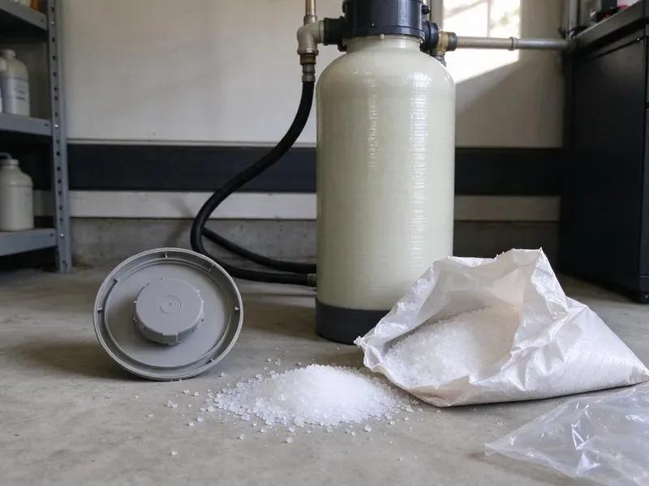

Plumbers for Frozen Pipes in Oregon City, OR
Protect your Oregon City home from the costly damage of burst pipes with JFL Plumbing's specialized frozen pipe services. We promptly address issues before they escalate, serving all of Oregon.
- Burst Pipe Repair
- Advanced Diagnostic Tools
- Fast Emergency Service
- Quick Frozen Pipe Service

Is Your Water Line Frozen? Call the Experts in Oregon City, OR.
Our team is ready to respond to your frozen pipe emergency and safeguard your property.
Prompt, Careful Plumbers for Frozen Pipes When Cold Nights Hit Oregon City, OR
JFL Plumbing knows where plumbing is most likely to freeze: exterior walls, attics, crawl spaces, outdoor hose bibs, backflow preventers, pool and irrigation lines and pipes in unheated garages. We find the frozen section, thaw it safely and repair any split before the water pressure comes back.
Our expertise includes:
- Burst pipe repair in walls, attics, garages and outdoor lines
- Electric and infrared thawing of copper, PEX and galvanized lines
- Insulation, heat cable and frost-free hose bib upgrades

Additional Plumbing Maintenance Services in Oregon City, OR
Our maintenance and specialty plumbing services in Oregon City, OR catch small problems before they become emergencies.


Customers
Why Choose JFL Plumbing for Plumbers for Frozen Pipes in Oregon City, OR?
Choosing the right professionals for frozen pipes means getting experienced help that understands Oregon climate challenges and building codes.
- Damage Prevention, Our preventive advice and services help you fortify your home against future freezing weather conditions.
- Flame-Free Thawing, We use controlled electric and infrared heat that is safe for walls, attics and plastic piping.
- Lasting Repairs, We prioritize lasting solutions, using quality materials such as Type L copper or PEX-A for repairs that withstand future cold snaps.
Citywide Coverage
JFL Plumbing proudly serves every neighborhood of Oregon City, understanding that frozen pipe emergencies can strike anywhere. Whether you are in a historic district or a newer subdivision, our local teams are always ready to help.
Experienced Team
Our team of plumbers has extensive experience with frozen pipe situations, a serious issue whenever a hard freeze reaches Oregon. They are thoroughly trained in safe thawing methods and effective burst pipe repair techniques.
Safety-First Approach
Safety is a top priority when dealing with frozen pipes, especially when using heat sources for thawing. We strictly adhere to all local plumbing codes in Oregon City and Oregon to ensure every repair is performed safely and legally, protecting your home and family.
Trusted Certified Oregon City Plumbing Services Professionals
At JFL Plumbing, we take pride in providing certified plumbing services throughout Oregon City, OR. Backed by leading industry credentials, our experienced plumbers combine technical skill with genuine customer care. Whether it is repair, installation, or maintenance, we follow strict safety and quality standards to deliver lasting results you can trust.
Call Us Now PHCC Plumbing Contractor Recognition
PHCC Plumbing Contractor Recognition Better Business Bureau (BBB) Accreditation
Better Business Bureau (BBB) Accreditation Angi Certified Pro
Angi Certified Pro ISO 9001 Quality Management Certification
ISO 9001 Quality Management CertificationReliable Plumbers for Frozen Pipes Services in Oregon City, OR
Thawing Drain Lines and Sewer Pipes in Oregon City
While less common, drain lines and sewer pipes can also freeze, leading to significant backups and health hazards. JFL Plumbing offers thawing services for these critical lines, often using hot water jetting equipment to melt ice blockages safely. We ensure that once thawed, the system is clear and functional, preventing further issues. Our expertise extends beyond water supply lines to all aspects of your property's plumbing in Oregon City.

Pool, Outdoor Equipment and Water Heater Line Freeze Damage in Oregon City, OR
Pool equipment lines, outdoor kitchen and ice maker supply tubing and water heater connections in garages are all common freeze points. Thin copper or plastic tubing in exposed spots splits easily in a hard freeze. We repair these lines and can add shutoff and drain valves so they can be winterized in minutes. If a water heater connection or valve was damaged, we repair it and check the unit.
Water Heater Line Thawing and Repair in Oregon City
The water lines leading to and from your water heater can also freeze, especially if located in an unconditioned space like a garage or utility closet in Oregon City. This can completely stop your hot water supply or damage the heater itself. Our plumbers are skilled at safely thawing these lines, inspecting for any damage to the water heater unit, and confirming proper function is restored. We handle both traditional tank and tankless water heater configurations.
Commercial Frozen Pipe Services in Oregon City, OR
Frozen pipes can severely disrupt business operations and cause significant property damage in commercial settings. JFL Plumbing provides specialized frozen pipe services for businesses in Oregon City, OR, including restaurants, offices, and retail spaces. We understand the urgency of commercial plumbing issues and offer fast, discreet service to minimize downtime. Our team is equipped to handle larger-scale systems and demanding commercial plumbing configurations.
Emergency Burst Pipe Repair in Oregon City, OR
A burst pipe is a true plumbing emergency that requires immediate attention to prevent extensive water damage to your Oregon City, OR home. Our emergency services are available 24/7 to respond to burst pipes caused by freezing. We'll shut off the main water supply, locate the rupture, and perform a durable repair or replacement, often using push-fit connectors for quick fixes or soldering new sections of Type L copper for long-term solutions. We understand the urgency and move quickly.
Attic and Exterior Wall Pipe Repair in Oregon City
Many homes run supply lines through attics or crawl spaces to reach bathrooms and kitchens, and those spaces get nearly as cold as the outside air at night. Pipes in exterior walls with thin insulation are also at risk. We repair freeze-damaged sections and add proper insulation or reroute lines into conditioned space. These changes greatly reduce the odds of a repeat freeze.
Slab Leak Detection for Frozen Pipes in Oregon City
In Oregon City, many homes have plumbing lines running through or under the concrete slab, and lines near the edge of the slab or in unheated areas can freeze and burst. If you suspect a slab leak after a freeze, perhaps from a sudden drop in water pressure or unexplained damp spots, our technicians use acoustic listening devices and thermal imaging to precisely locate the leak without destructive guesswork. We then provide focused repair plans to fix the damaged pipe.

Emergency Frozen Pipe Thawing in Oregon City
When you discover a frozen pipe, time is critical to prevent a burst. JFL Plumbing offers emergency thawing services, deploying technicians with thermal cameras and safe thawing equipment like heat guns and portable heaters. We locate the exact blockage, whether it is in an exterior wall, crawl space, or attic, and carefully apply heat to restore water flow without damaging your pipes. Our fast response aims to minimize the risk of extensive water damage to your home in Oregon City.
Plumbers for Frozen Pipes Near Me in Oregon City, OR
Our local expertise means we're familiar with the challenges of plumbing in Oregon City, from older homes with less insulated pipes to newer construction. For dependable frozen pipe services near me, you can trust our licensed and experienced plumbers to provide effective solutions and durable repairs.
Our team is positioned to serve all areas of Oregon City and surrounding communities, ensuring that help is always just a phone call away. For dependable and prompt service regarding frozen pipes, JFL Plumbing is the trusted choice for homeowners across Oregon.
JFL Plumbing at a Glance
- Fully licensed plumbing team covering Oregon City, OR
- Same-day appointments and 24/7 emergency response
- Upfront, flat-rate pricing before work begins
- 4.8-star rated by 657+ Oregon customers
Oregon City Map
Oregon City Information
- Population
- 37,351
- Area codes
- Local
- Service area
- Oregon City and communities within 40 miles
- Nearby
- Lake Oswego, Tigard, Gresham, Portland
Having a dependable plumber for frozen pipes in Oregon City, OR is crucial for protecting homes from significant water damage and costly repairs when winter weather turns. Higher elevations and the eastern side of Oregon get much colder winters, where freeze protection is a regular part of home care.
Expert Services
Trust our professionals for reliable JFL Plumbing solutions in Oregon City, OR.
Our Specialized Plumbing Services in Oregon City, OR
At JFL Plumbing, we provide a complete range of plumbing services across Oregon City, OR. From leak detection to full system installations, our team ensures fast, precise, and affordable service for both residential and commercial properties. Explore our core services below:


How Our Frozen Pipe Repair Process Works in Oregon City, OR
Our process is designed to restore water safely and keep a frozen pipe from turning into a flood.
Request a Quote
Call (971) 333-7694 and tell us which fixtures have no water and whether you see any leaks. We give you safety steps to take while we are on the way.
Locate and Thaw
We use thermal imaging to find the frozen section and thaw it with flame-free equipment. Faucets stay open so pressure can escape as the ice melts.
Test and Protect
We pressure test the line and repair any splits. Then we insulate or upgrade vulnerable pipes so they are prepared for the next cold night.
Frequently Asked Questions About Plumbers for Frozen Pipes in Oregon City
Thawing an accessible frozen pipe in Oregon City usually costs $150 to $400. Burst pipe repairs typically run $250 to $800, with higher costs when drywall or ceilings must be opened. We give you pricing before we start.
Oregon enforces a statewide plumbing specialty code based on the Uniform Plumbing Code, and plumbers must hold a state license. Plumbing codes generally require proper insulation for pipes in unconditioned spaces and minimum burial depths for water lines to reduce freezing risk. Our plumbers are well-versed in local Oregon requirements and make sure all work is code-compliant.
JFL Plumbing stands behind our work with comprehensive warranties on all frozen pipe repairs and installations. Specific warranty details vary by the type of repair and materials used, but we always make sure our customers receive lasting solutions and peace of mind.
Ice can split a pipe while frozen, but the leak only appears once the ice melts and water flows again. That is why we pressure test every thawed line. It catches hidden splits before they cause damage.
To prevent pipes from freezing in Oregon City, insulate all exposed pipes, especially those in unheated areas like crawl spaces, attics, and basements. Disconnect garden hoses, drain outdoor spigots, and consider keeping a small trickle of water running from faucets during extreme cold snaps. Sealing air leaks near pipes can also help.
A frost-free hose bib has a long stem that shuts off water inside the warm part of the wall. Brands like Woodford and Prier make dependable models. They greatly reduce freeze damage at outdoor faucets.
While any pipe can freeze, older galvanized steel or copper pipes in uninsulated areas are usually more susceptible to bursting due to their rigid material. PEX piping is generally more freeze-resistant because it can expand, though it can still freeze and burst under extreme conditions. Our team works with all pipe types.
Common signs of a frozen pipe include a sudden drop in water pressure, no water coming from a specific faucet, visible frost on an exposed pipe, or strange gurgling sounds from your drains. If a pipe has burst, you might see water stains, hear dripping, or notice a sudden increase in your water bill.
What People Are Saying About Our Plumbing Experts?

Sofia M.
Two new toilets installed in one visit, no mess left behind, and the tech even adjusted a faucet he noticed was dripping. Fair pricing and really friendly.
Toilet Installation · Aloha, OR
Emily R.
I called JFL Plumbing for plumbing repair, and the technician was fast, polite, and thorough. They explained the problem clearly and fixed it the same day. I will definitely hire them again. Highly recommended!
Plumbing Repair · Oregon City, OR
Robert G.
The trenchless sewer replacement saved our front yard. They walked us through the camera inspection footage first so we knew exactly what we were paying for.
Sewer Line Replacement · Gresham, ORLaura S.
I scheduled a water heater replacement, and the team made the process smooth and affordable. The new unit works perfectly, and they cleaned up after completing the job.
Water Heater Replacement · Tigard, ORJames P.
Our commercial plumbing system had a leak under the sink, and JFL Plumbing handled it professionally. The plumbers arrived quickly and restored everything without disruption to our customers.
Commercial Plumbing · Aloha, OR
Patricia H.
We had a slab leak that two other companies could not find. JFL Plumbing located it in under an hour, explained our options, and the price matched the quote to the dollar.
Slab Leak Repair · Oregon City, OR